5-dimensional CSFs: spatial and temporal frequency, luminance, size and eccentricity
Fitting error
Model parameters
elaTCSF
Parameters for TCSF component:
p.E_thr = 8.86616;
p.beta = 4.51296;
p.elTCSF.lum_k1 = 1.47533;
p.elTCSF.lum_k2 = 4.50302;
p.elTCSF.lum_k3 = 0.448693;
p.elTCSF.ecc_k1 = 0.0258881;
p.elTCSF.tcsf_ecc_k1 = 0.0539067;
p.elTCSF.tcsf_lum_k1 = 0.20599;
↸CSF model: elaTCSF
elTCSF11-Sensitivity-Temporal Frequency - different eccentricity
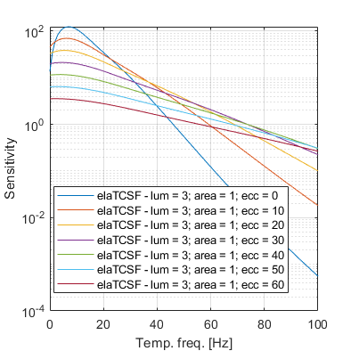
elTCSF11-Sensitivity-Temporal Frequency - different luminance
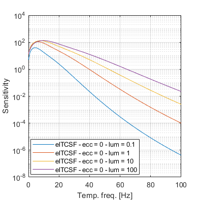
elTCSF11-Sensitivity-Luminance
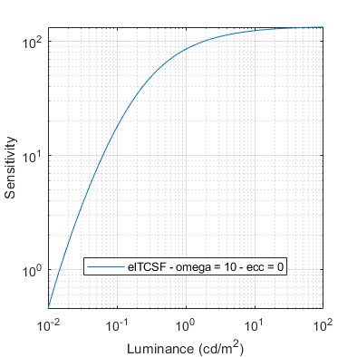
elTCSF11-Sensitivity-Eccentricity
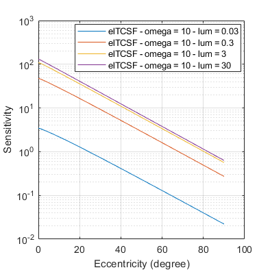
Legend
To keep the plots legible, only up to 3 models are plotted.
↸Dataset: [hartmann1979] Hartmann et al. 1979
CFF as a function of eccentricity at different luminance levels
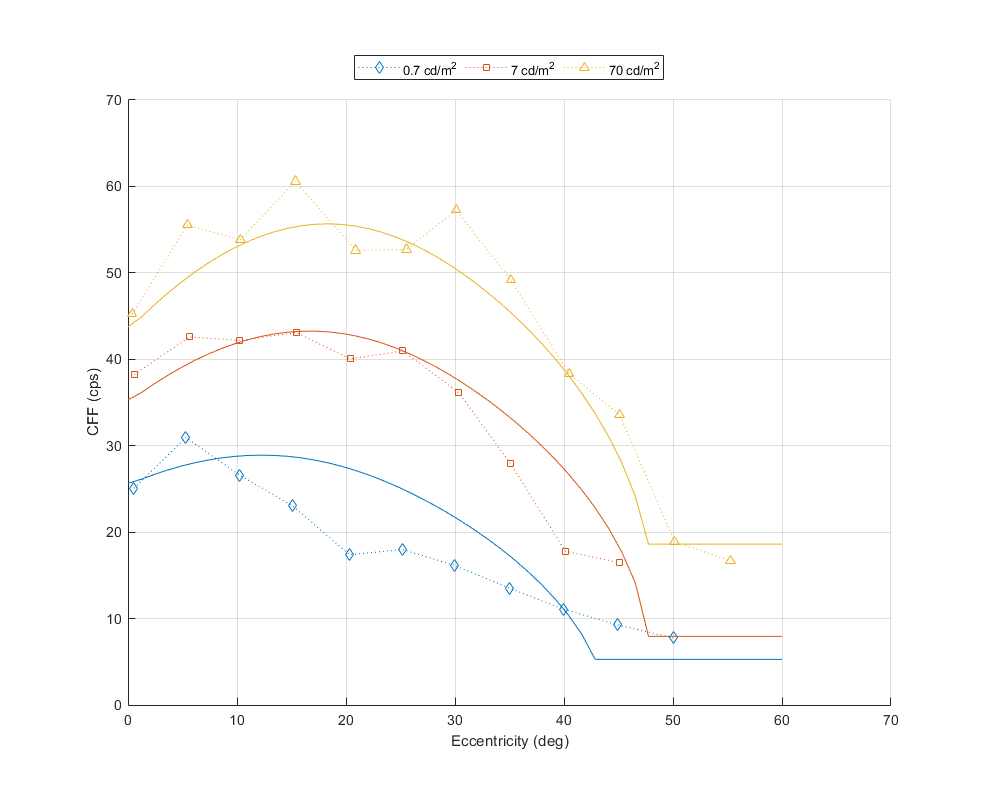
CFF as a function of stimulus diameter
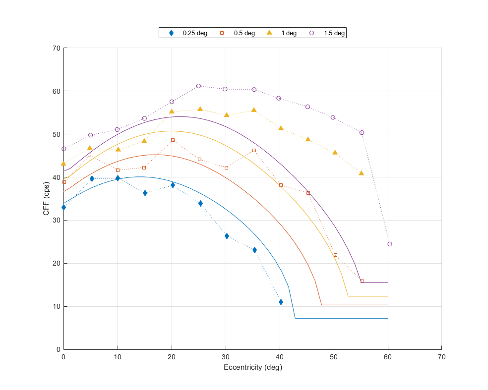
↸Dataset: [deLange1958b] De Lange 1958
CFF for white light as a function of luminance
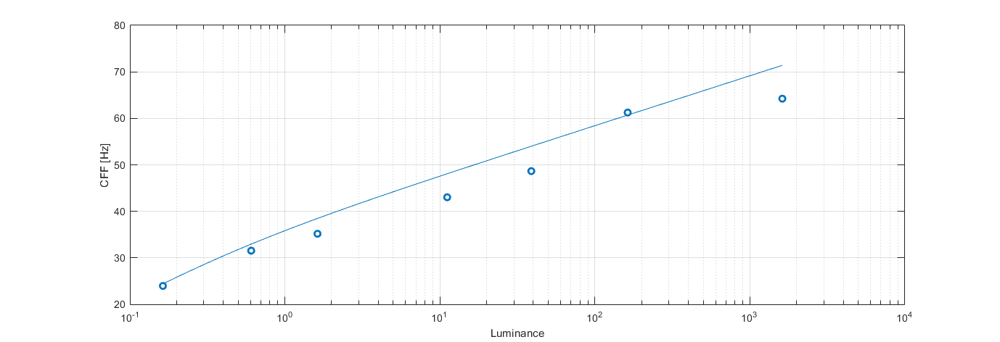
↸Dataset: [krajancich2021] Krajancich et al. 2021
Critical fusion frequency at eccentricities
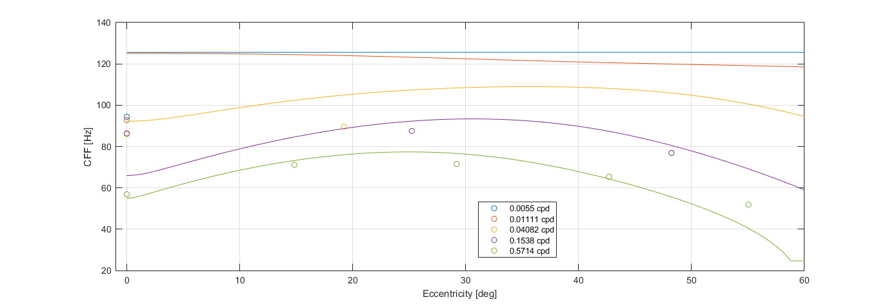
CFF at luminance levels for 0.57 cpd
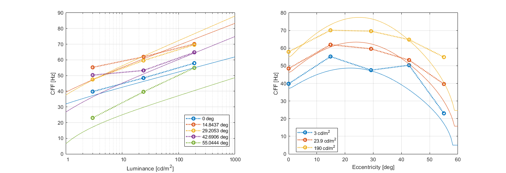
CFF at luminance levels, foveal vision (ecc=0)
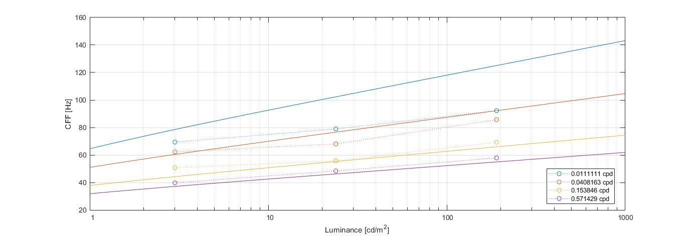
↸Dataset: [yancheng2024] Yancheng Cai 2024 VRR Flicker Dataset
Sensitivity vs. Temporal Frequency
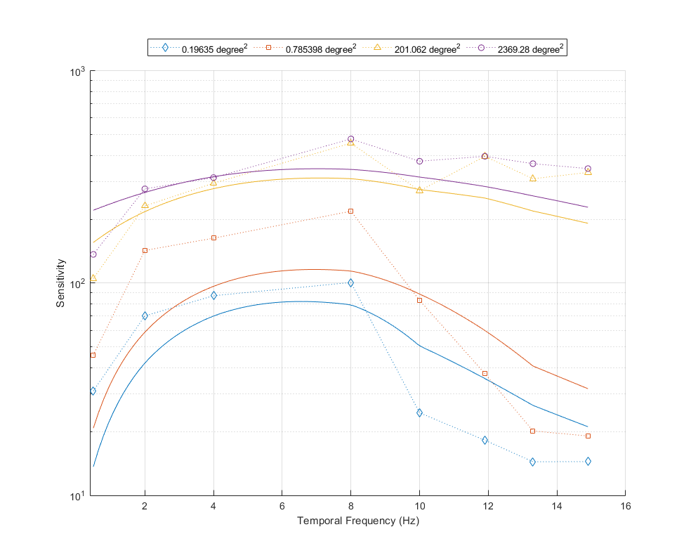
Sensitivity vs. Area
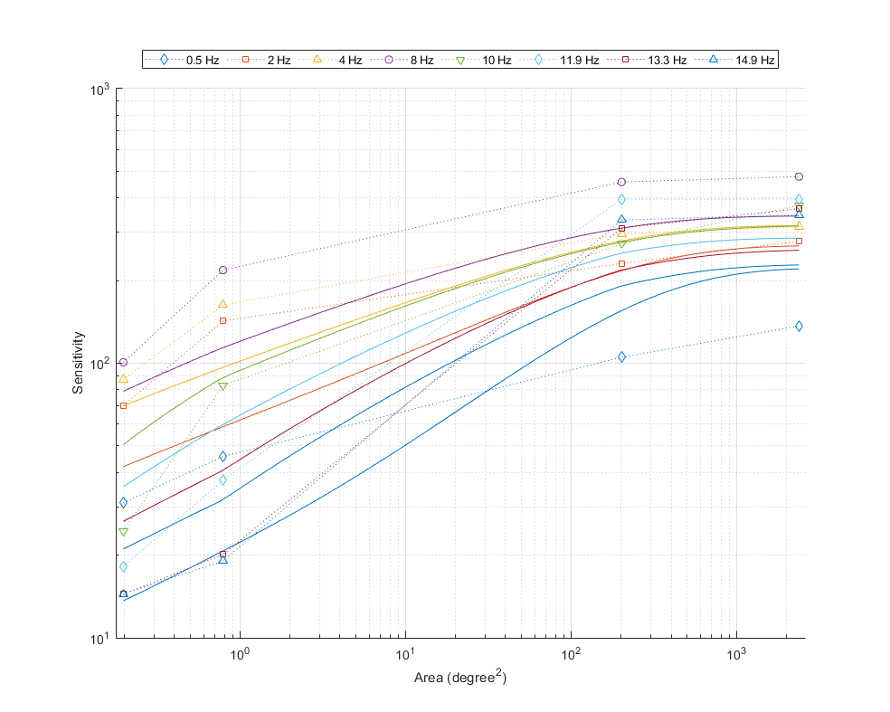
↸Dataset: [hvei_cff2022] HVEI CFF 2022
CFF for white light as a function of luminance and eccentricity
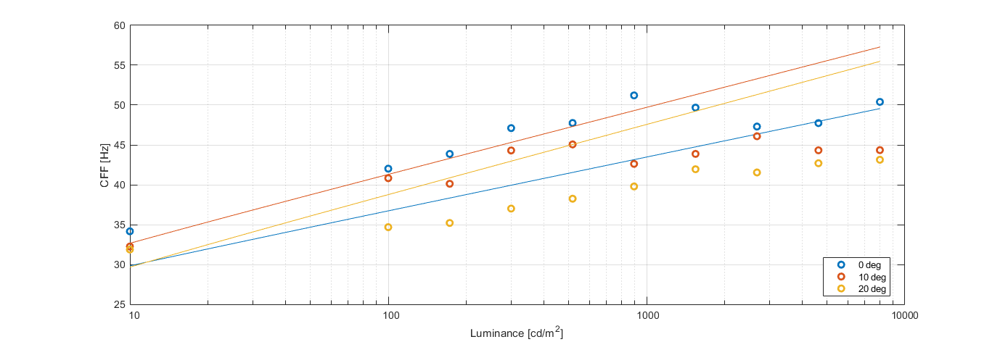
↸Dataset: [snowden1995] Snowden et al. 1995
Temporal contrast sensitivity at different spatial frequencies and luminance levels
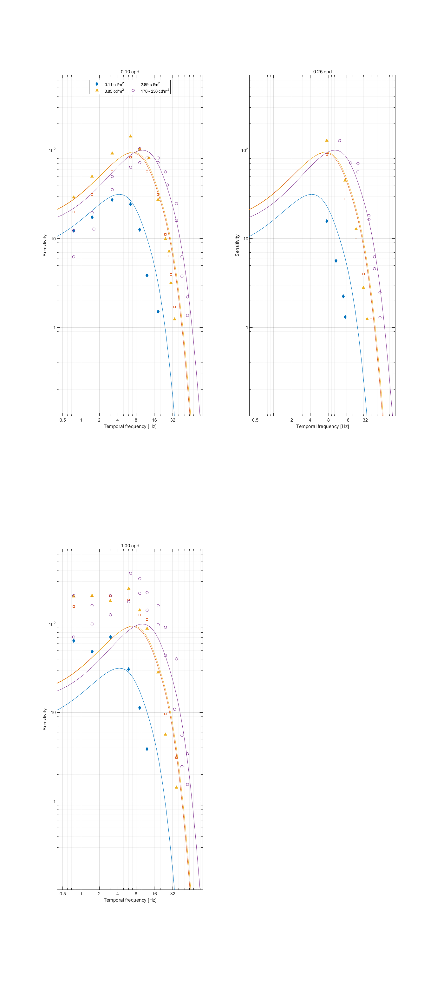